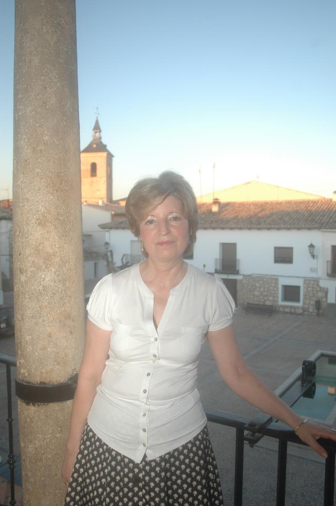
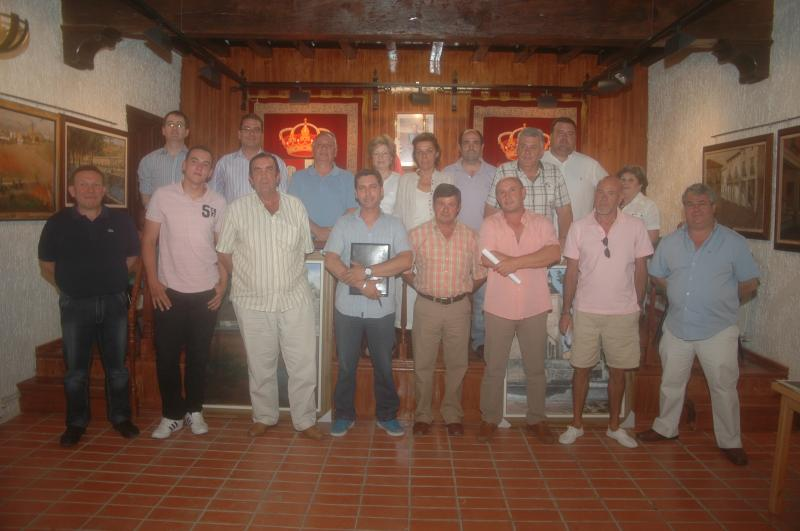

¿Qué es la mancomunidad de Villas Alcarreñas?

Consuelo Francisca Vázquez
Presidenta
La Mancomunidad Villas Alcarreñas es una asociación de municipios constituida en 1991 integrada por los municipios de Alhóndiga, Auñon, Fuentelencina, Horche, Moratilla de los Meleros, Peñalver, Romanones y Tendilla para la realización y prestación en común de obras servicios y actividades.
En sus comienzos la Mancomunidad se dedicaba sólo a uno de los fines de la misma: recogida y tratamiento de basuras.
En la actualidad trabaja en la recogida y selección de los residuos, tanto orgánicos, vidrio, papel y voluminosos, y presta también el servicio de desratización y desinsectación en todos los municipios mancomunados, así como en la edición del periódico gratuito trimestral Villas Alcarreñas, el desarrollo de actividades socioculturales y de promoción del turismo en la comarca. Para ello una Agente de Empleo y Desarrollo Local se encarga de coordinar y dinamizar el medio económico, social y cultural de estos municipios.
Según los Estatutos, la sede radica en el municipio de donde es el presidente y se gobierna a través de dos órganos:
- La Mancomunidad en Pleno integrada por 16 miembros, ya que cada municipio está representada por dos vocales. Los alcaldes de todos los municipios son miembros natos del plenario; el otro vocal es elegido por su respectivo pleno municipal
- El presidente es elegido por el Pleno de la Mancomunidad entre sus miembros y por mayoría absoluta.

Plenario de la Mancomunidad Villas Alcarreñas